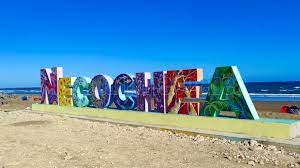
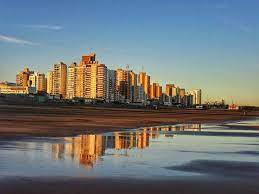
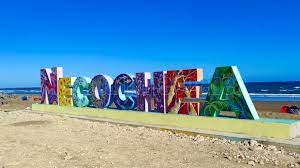
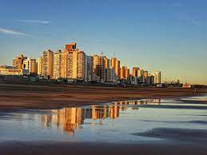
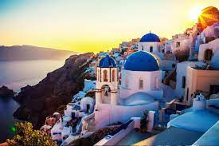
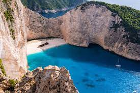
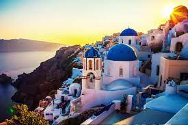
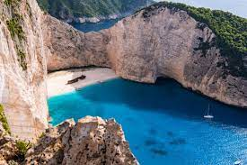

Necochea
 



Necochea sin dudas es un lugar que deberías visitar. Hablando de Naturaleza cuenta con todo, un río que la separa de Quequén, un parque enorme llamado Miguel Lillo, una extensa playa, una escollera y sus lobos marinos que te brinda una hermosa vista. También, como entretenimiento, podrás encontrar cines, casino, Peatonal, el Lago de los Cines y muchas cosas más.
Mar del Plata
Mar del Plata es uno de los destinos turísticos más populares de Argentina. Con sus extensas playas, emblemático casino y vibrante vida nocturna, ofrece una amplia gama de actividades para los visitantes. Además de relajarse en la costa, los turistas pueden explorar lugares de interés como el Torreón del Monje, el pintoresco puerto y el Museo Mar. Mar del Plata también es conocida por su deliciosa gastronomía, que incluye pescados y mariscos frescos. Es un lugar ideal para disfrutar de un ambiente animado y actividades para todas las edades.
Tandil
Tandil es un destino encantador situado en medio de las sierras de la provincia de Buenos Aires. Es conocido por su hermoso entorno natural y ofrece una gran variedad de actividades al aire libre. Los visitantes pueden disfrutar de vistas panorámicas desde el Cerro Centinela, admirar la famosa Piedra Movediza y disfrutar de paseos en aerosilla. En el centro de la ciudad, se encuentra el Dique del Fuerte y el Parque Independencia, con su arquitectura impresionante. Tandil es ideal para aquellos que buscan un escape tranquilo en la naturaleza, con muchas opciones de senderismo y actividades recreativas.
Glaciar Perito Moreno

El Glaciar Perito Moreno, ubicado en la provincia de Santa Cruz, Argentina, es una maravilla natural impresionante. Es uno de los pocos glaciares en el mundo que sigue avanzando en lugar de retroceder. Con una altura de más de 70 metros, este imponente glaciar ofrece un espectáculo único con sus desprendimientos de hielo que caen al agua con estruendosos ruidos. Los visitantes pueden disfrutar de impresionantes vistas panorámicas desde las pasarelas cercanas, realizar excursiones en barco o incluso caminar sobre el hielo con guías especializados. Es un destino fascinante para los amantes de la naturaleza y la aventura.
Bariloche
San Carlos de Bariloche, conocida como Bariloche, se encuentra en la provincia de Río Negro, Argentina, y es famosa por su impresionante paisaje montañoso y sus hermosos lagos. Es un destino popular durante todo el año, ya que ofrece actividades tanto en invierno como en verano. En invierno, los visitantes pueden disfrutar del esquí y otros deportes de invierno en el Cerro Catedral, mientras que en verano se pueden realizar caminatas, paseos en bote y disfrutar de la belleza natural de los lagos Nahuel Huapi y Moreno. Bariloche también es conocida por su deliciosa gastronomía, especialmente por sus chocolates artesanales. Es un lugar ideal para los amantes de la naturaleza, los deportes al aire libre y el buen comer.
Cataratas del Iguazú
Las Cataratas del Iguazú, ubicadas en la frontera entre Argentina y Brasil, son una de las maravillas naturales más impresionantes del mundo. Este conjunto de cascadas espectaculares se extiende a lo largo del río Iguazú y cuenta con más de 275 saltos de agua majestuosos. La Garganta del Diablo es el salto más imponente, donde el agua cae con una fuerza abrumadora. Los visitantes pueden explorar las pasarelas que ofrecen diferentes vistas de las cataratas, realizar paseos en bote para sentir la fuerza del agua de cerca o incluso hacer un recorrido en helicóptero para obtener una perspectiva panorámica. Es un destino asombroso para los amantes de la naturaleza y la aventura.
Mexico
México es un país vibrante y diverso que combina una rica historia, una cultura colorida y hermosos paisajes. Desde las antiguas ruinas de las civilizaciones mesoamericanas, como las de Teotihuacán y Chichén Itzá, hasta las playas paradisíacas de Cancún y Los Cabos, México ofrece una amplia gama de experiencias. Además de su patrimonio arqueológico, el país es famoso por su gastronomía, como los tacos, los tamales y los guacamoles, así como por su arte y artesanía tradicional, como los alebrijes y los textiles. México es un destino fascinante que combina historia, cultura, belleza natural y hospitalidad mexicana.
Grecia
 



Grecia es un país situado en el sureste de Europa y es conocido por ser la cuna de la civilización occidental. Con una rica historia y una gran cantidad de sitios arqueológicos, Grecia atrae a los amantes de la historia y la cultura. Desde los famosos monumentos de la antigua Atenas, como la Acrópolis y el Partenón, hasta las impresionantes ruinas de Delfos y Olimpia, hay mucho que explorar. Además de su patrimonio histórico, Grecia también ofrece hermosas islas con playas paradisíacas, encantadores pueblos costeros y una deliciosa gastronomía mediterránea. Es un destino fascinante para sumergirse en la historia antigua y disfrutar de la belleza natural.
Italia
Italia es un país ubicado en el sur de Europa y es conocido por su rica historia, su arte renacentista, su deliciosa comida y su hermoso paisaje. Desde los canales románticos de Venecia y los monumentos históricos de Roma, como el Coliseo y el Vaticano, hasta la majestuosidad de Florencia y sus obras maestras de arte, como el David de Miguel Ángel, Italia ofrece una experiencia cultural incomparable. Además, el país cuenta con impresionantes paisajes, como los lagos de la región de los Dolomitas, la costa Amalfitana y la belleza natural de la Toscana. Es un destino soñado para los amantes de la historia, el arte, la gastronomía y la belleza escénica.